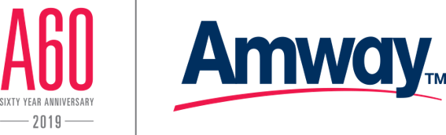

2019全球安麗60周年
拉斯維加斯
鑽石海外旅遊
共襄盛举
2019年是安麗創建60周年，總公司將邀请安麗全球鑽石級以上領導人，共赴美國內華達州的拉斯维加斯一起共襄盛舉!
活動日期:
全球政策諮詢委員
2019/5/16 - 2019/5/22
執行專才直系直銷商以上
2019/5/17 - 2019/5/22
鑽石直系直銷商以上
2019/5/18 - 2019/5/22
璀璨行程

更多精彩專屬行程即將公開
奢華享受
曼德勒海灣度假村
提到拉斯維加斯這個“娛樂之都”，就不得不提她的酒店，這裡匯聚了全球三分之二的奢華酒店，公司所安排的“曼德雷海灣度假村”也是其中之一。
曼德勒海灣度假村位於拉斯維加斯大道(Las Vegas Strip)，設有鯊魚礁水族館(Shark Reef Aquarium)，裡面擁有2000種海洋生物，在酒店後方還有11英畝的人造沙灘和泳池，因此還曾獲選為“拉斯维加斯最好的游池”。
處在這五光十色，霓紅閃耀的不夜城，各位領導人還可前往酒店知名的紅場酒吧(Red Square)、藍調小屋音樂餐廳(House of Blues)以及賭場盡情地娛樂、放鬆，相信定會成為各位難以忘懷的夜晚!
尋夢之旅
新科鑽石直系直銷商專屬行程
此次新科鑽石直系直銷商且從未獲邀到訪過亞達城的領導人，除了能參與60週年的慶典外，還將於5月16-18日前往參加“亞達城總部尋夢之旅”(具體內容近期公佈)，了解創辦人邁向成功的起點，探訪安麗人的精神家園!
線上調查
線上調查
第一階段出席調查
2018年11月5日起
第二階段行程選擇
預計2019年2月
**請留意手機短信與網站公告
